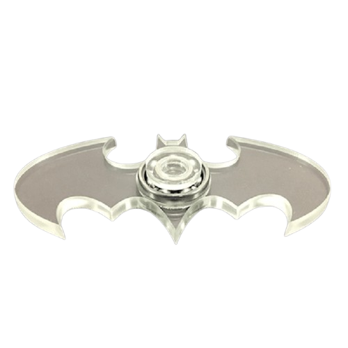
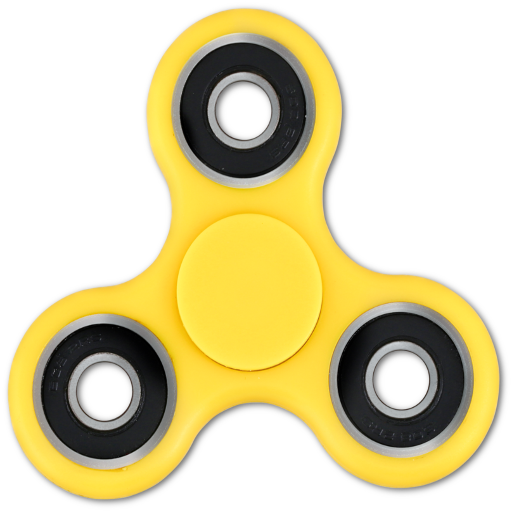
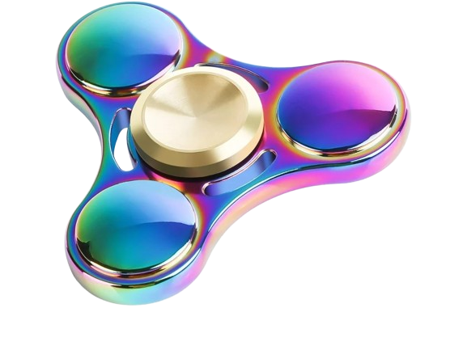
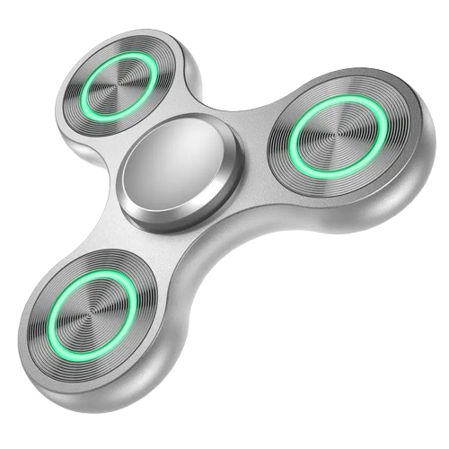
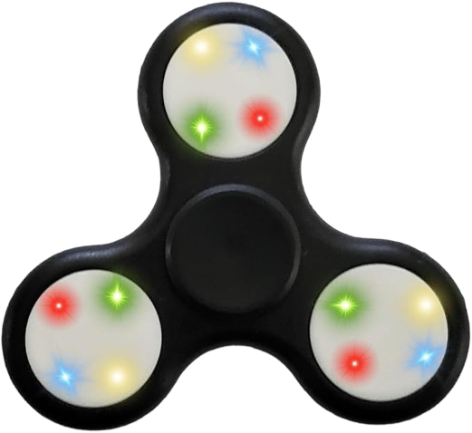

=======
>>>>>>> 254f9d296588d5699feb94f888d15d7674afddba O Fidget Spinner é um brinquedo de mão criado para girar rapidamente sobre um eixo central. Seu design possui três ou mais pontas com rolamentos que permitem uma rotação suave e prolongada. Além de ser divertido, muitas pessoas utilizam o Fidget Spinner como forma de aliviar o estresse, melhorar a concentração e ocupar as mãos durante momentos de ansiedade ou tédio. Lançado em grande escala por volta de 2017, ele se tornou uma febre mundial entre crianças, adolescentes e adultos. Atualmente, existem diversos modelos, cores e materiais, tornando o brinquedo não apenas um passatempo, mas também um item de coleção para muitos fãs.
O Fidget Spinner é um pequeno brinquedo desenvolvido para ser segurado e girado com os dedos. Ele possui um eixo central com rolamentos que permitem que suas pontas girem de maneira suave e rápida. Existem diversos modelos, com diferentes formatos, cores e materiais. Além de ser divertido de usar, seu tamanho compacto facilita o transporte e faz dele um objeto simples para passar o tempo e manter as mãos ocupadas.




